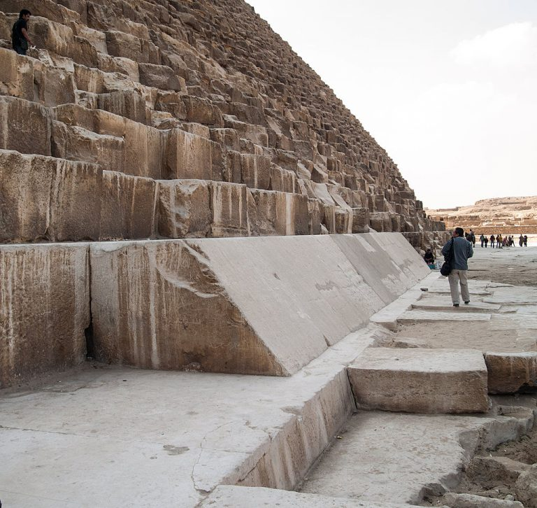
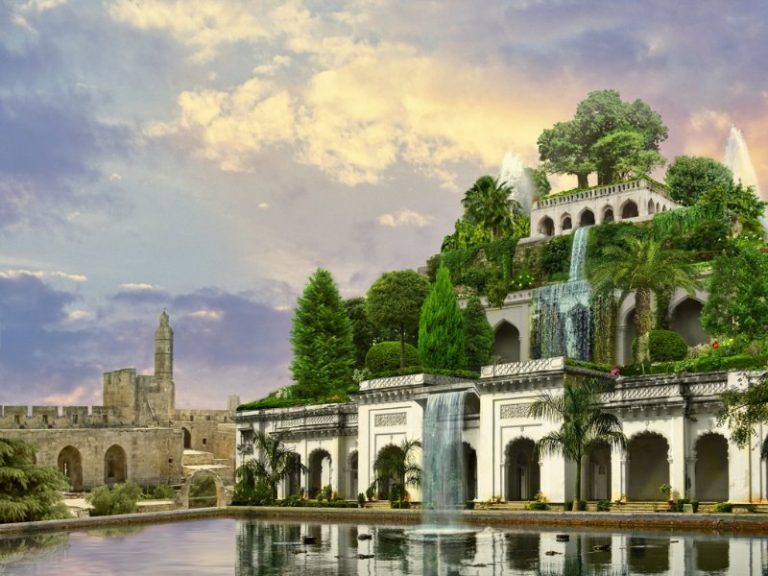
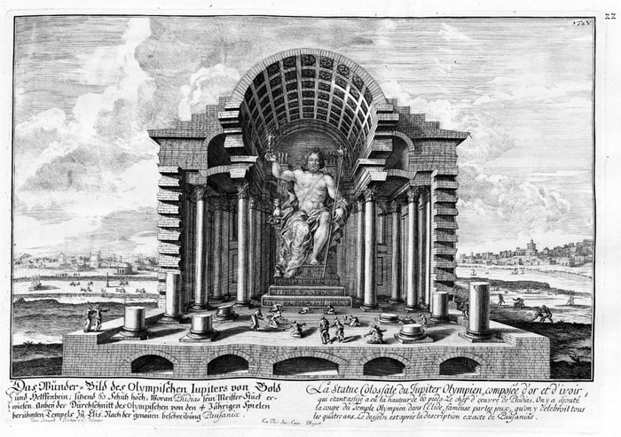
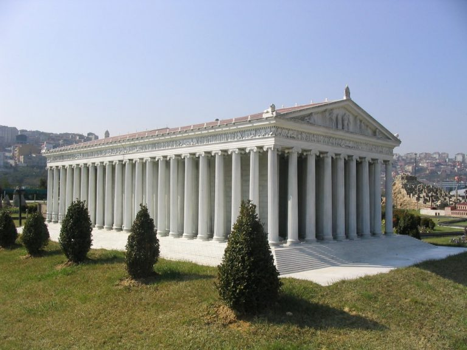
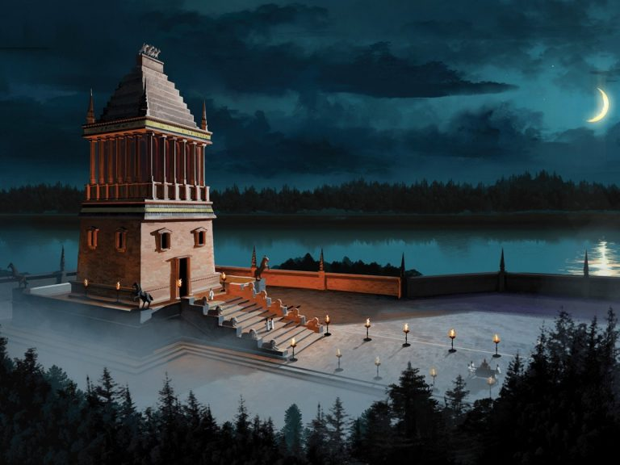
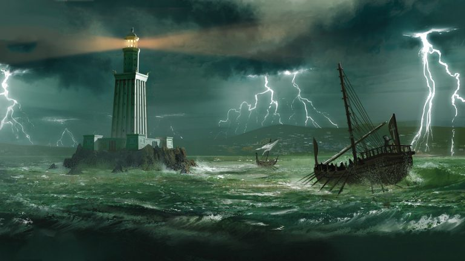

Во все века люди гордились и бережно охраняли достижения своих цивилизаций. Память об этих достижениях дошла и до наших дней, став достоянием всемирной истории. Семь чудес света – это классический список выдающихся творений рук человеческих.
Интересен факт, что он был хорошо известен еще до нашей эры. В древних школах детей обучали разным наукам, и знание 7 чудес света было обязательным.
В данной статье мы предоставим вам не только список 7 чудес света, но и сделаем краткое описание каждого из них.
Ну, а теперь фото и описание шедевров древности, которые мы называем не иначе, как семь чудес света.
Первым чудом света принято считать пирамиду Хеопса (Хуфу). Интересно, что это единственное из всех 7 чудес света, которое сохранилось до наших дней.
Точная дата постройки этого грандиозного сооружения неизвестна. Однако ученые предполагают, что это около 2600 г. до н.э.
Изначальная высота пирамиды Хеопса равнялась 146 метрам (это как 5 девятиэтажных домов), в то время как сейчас это приблизительно 138 м. Угол наклона стен – от 51° до 53°. Средний вес блоков, из которых построена пирамида, равен 2,5 тонн, хотя некоторые блоки достигают 80 т.
Никакого цемента или другого связующего вещества при постройке не использовалось. Каменные блоки первого чуда света просто уложены друг на друга. Поверхность пирамиды была облицована плитами из известняка. На сегодняшний день покрытие почти полностью разрушено.
Внутри пирамиды имеется три камеры: подземная, «Камера царицы» и «Камера фараона». Вход внутрь этого сооружения был всего один, и находился он на высоте 15 метров от земли. Но в 820 г. был проделан еще один, искусственный вход в пирамиду Хеопса.
Назначение этой потрясающей постройки неизвестно до сих пор. Раньше считалось, что пирамиды играли роль усыпальниц для фараонов. Однако такой упрощенный взгляд на столь величественную и сложную конструкцию давно не воспринимается всерьез.
Есть также предположения, что пирамида Хеопса являлась древней космической обсерваторией, или была мощнейшим генератором энергии.
Висячие сады Семирамиды считаются 2 чудом света. Построено это удивительное сооружение в 605 г. до н.э., однако уже в 562 г. до н.э. оно разрушилось из-за наводнения.
Несмотря на то, что висячие сады Вавилона названы по имени ассирийской царицы Семирамиды (800 г. до н.э.), Навуходоносор II строил их в честь своей жены Амитис.
Но в список 7 чудес света висячие сады вошли с именем Семирамиды.
Конструкция состояла из четырех этажей. Все они были обустроены прохладными комнатами для царских прогулок. Колонны высотой 25 м поддерживали каждый ярус.
Террасы покрывали специальными свинцовыми листьями и заливали асфальтом, чтобы вода для полива растений не просачивалась. Сверху все это присыпалось землей такой толщины, чтобы там свободно могли расти деревья. Можно только представить, какой вес выдерживали колоны нижнего яруса.
Вода для полива закачивалась наверх из реки Евфрат при помощи хитрой системы. Рабы постоянно крутили колесо для подачи воды, так как величественная постройка с потрясающими воображение садами требовала много влаги.
Чтобы увидеть место, на котором располагалось 2 чудо света – висячие сады Семирамиды, вам придется съездить в Ирак, так как руины древнего Вавилона найдены именно там.
По названию 3 чуда света – статуи Зевса, нетрудно догадаться, кому этот архитектурный шедевр был посвящен. Дело в том, что греки построили храм языческому богу Зевсу в 465 г. до н.э., а вот статуя Зевса, которая считается одним из 7 чудес света, появилась там только через 30 лет.
Автором идеи и главным строителем грандиозного сооружения является известный архитектор из Афин по имени Фидий.
Сама статуя Зевса была сделана из слоновой кости и достигла в высоту 17 метров (как пятиэтажный дом). В основании монумента была квадратная плита, шириной 6 м и высотой 1 м.
Эффект, произведенный на греков третьим из чудес света, был потрясающим. Дело в том, что соотношения размеров самого храма и статуи Зевса внутри него были такими, что казалось, будто сейчас Зевс поднимется и проломит крышу храма, так как в противном случае он бы просто не смог распрямиться.
Простояла статуя Зевса в Олимпии около 800 лет. В начале 5 века нашей эры храм был разрушен, а статуя в целях сохранения культурного наследия была транспортирована в Константинополь. В 425 г. она погибла во время пожара.
В древнегреческом городе Эфес в 560 г. до н.э. был возведен храм Артемиды Эфесской, впоследствии ставший одним из 7 чудес света.
Высота храма составляла 18 м, ширина – 52 м, длина – 105 м. Крыша поддерживалась 127 колоннами.
Над созданием этого архитектурного шедевра трудились одни из лучших мастеров античности. Сама статуя Артемиды была сделана из золота и слоновой кости.
Храм имел не просто религиозное значение, но был также культурным и экономическим центром.
Кто сжег храм Артемиды Эфесской?
Летом 356 года до н. э. храм Артемиды, являющийся одним из 7 чудес света, был сожжен жителем города Эфеса. Имя поджигателя храма – Герострат.
Вы спросите, для чего Герострату понадобилось уничтожать столь уникальный памятник архитектуры?
По его собственному признанию, он сделал это для того, чтобы войти в историю и навсегда увековечить свое имя. Несмотря на то, что его казнили за это злодеяние, имя Герострата действительно дошло до наших дней.
Однако великий полководец Александр Великий восстановил храм Артемиды Эфесской в прежнем виде, выделив для этого дела колоссальные средства.
В 263 году четвертое чудо света было разграблено и уничтожено готами.
Останки храма Артемиды из Эфеса можно найти в Турции, в городе Сельчук, провинции Измир.
Галикарнасский мавзолей, попавший в список 7 чудес света, появился в 351 г. до н.э. Автором идеи является царь Карии по имени Мавсол вместе со своей женой – царицей Артемисией.
Таким образом, они решили увековечить свое имя по примеру египетских фараонов. Надо сказать, что его затея оказалась успешной, так как пятое чудо света до сих пор связано с его именем.
Здание мавзолея было трёхъярусным.
Первый ярус представлял собой массивный цоколь, опоясанный по периметру статуями древнегреческих героев. Внутри, после смерти Мавсола и его жены, должны были быть помещены их гробницы.
Второй этаж использовался в качестве храма для служения языческим культам. На нем располагалось 36 колонн, которые держали верхнюю, главную часть Галикарнасского мавзолея.
Третий ярус имел вид пирамиды, состоящей из 24 ступеней. На самом верху была установлена основная ценность мавзолея: величественная статуя, представлявшая собой колесницу с царем Мавсолом и его супругой Артемисией.
Это кажется невероятным, но в музее Британии можно увидеть неплохо сохранившиеся до наших дней статуи обоих царственных супругов.
Мавзолей в Галикарнасе, ставший одним из семи чудес света, был разрушен в 13 веке вследствие масштабного землетрясения.
В турецком курортном городе Бодрум можно найти место, где когда-то стоял Галикарнасский мавзолей.
Колосс Родосский вошел в классический список семи чудес света практически сразу после своего создания в 280 г. до н.э.
Но сначала расскажем предысторию появления шестого чуда света. Деметрий I практически сразу после смерти Александра Великого напал на Родос – один из крупнейших портовых городов.
Продержав осаду города больше года, он по непонятным причинам бросил все, что у него там было, и ушел со своим войском.
В знак благодарности жители Родоса решили продать оказавшееся в их руках огромное имущество и на вырученные деньги построить памятник Гелиосу – богу солнца.
Главным архитектором и скульптором этого шедевра был Херес. Первоначальная задумка жителей Родоса сводилась к тому, чтобы построить статую, которая была бы в 10 раз выше среднего роста человека, то есть 18-метровую.
Но потом они решили удвоить высоту, для чего выделили Хересу еще большую сумму денег. Но и их не хватало для продолжения строительства. Однако Херес уже не мог остановиться.
Он занимал колоссальные деньги у богатых друзей и родственников и продолжал неутомимо трудиться над созданием памятника, который впоследствии пополнит семь чудес света.
В конечном счете, через 12 лет титанического труда, мир увидел 36-метровый Колосс Родосский. Он состоял из железного каркаса, отделанного глиной, и был облицован бронзой. Располагался Колосс прямо у входа в гавань, и был виден со всех близлежащих островов.
Интересно заметить, что судьба самого скульптора Хереса была трагичной. После завершения своего шедевра, он подвергся преследованию со стороны кредиторов. В конечном счете, он покончил жизнь самоубийством.
В целом для возведения Колосса Родосского было использовано 13 тонн бронзы и 8 тонн железа. Однако через 65 лет после своего появления, около 225 г. до н.э. Колосс Родосский рухнул в море, переломившись в районе колен. Кстати, выражение «колосс на глиняных ногах» появилось именно после этого.

Очевидцы оставили сведения о том, что один только палец статуи был такой толщины, что его едва могли обхватить два взрослых человека.
Высота колосса составляла приблизительно 60 м (как восемнадцатиэтажный дом). В лежачем положении родосская статуя пролежала почти 900 лет. Потом она была разобрана и продана арабами, захватившими к тому времени Родос.
В конце следует лишь заметить, что никаких точных данных о том, как на самом деле выглядел Колосс Родосский, вошедший в семь чудес света, не существует.
Последним, седьмым чудом света является Александрийский маяк, построенный в 3 веке до н.э. По-другому его еще называют Фаросский маяк.
Идея создания этого маяка была вполне практическая. Дело в том, что недалеко от Александрии располагался остров Фарос с важной бухтой. Она в то время имела большое значение для проходящих мимо торговых судов.
Вероятно Сострат Книдский (главный архитектор маяка) мечтал о том, что его детище войдет в семь чудес света и прославит в веках его имя.
Реализован проект был во время правления египетского Птолемея II. На строительство отводилось 20 лет, но Сострат выполнил работу всего за 5.
Интересен факт, что когда от Сострата потребовали запечатлеть на Александрийском маяке имя Птолемея, он поступил очень хитро. Сначала он высек на камне свое имя, а сверху из штукатурки выложил имя правителя.
Через несколько десятилетий штукатурка разрушилась, и жителям предстало имя подлинного мастера и автора седьмого чуда света.
Состоял Александрийский маяк из трех башен.
Самая нижняя часть представляла собой технический этаж, где жили рабочие и солдаты, а также хранился весь инвентарь по уходу за маяком.
Вторая часть имела вид восьмиугольной башни, вокруг которой располагался пандус. По нему подавали топливо для огня.
Самый верхняя, ключевая башня маяка, была оборудована сложнейшей системой зеркал, благодаря которым свет от огня был виден так далеко.
Общая высота Фаросского маяка была около 140 метров. На самой макушке была установлена статуя бога морей – Посейдона.
Следует упомянуть об отзывах современников, видевших Александрийский маяк лично. Так некоторые путешественники рассказывали об удивительных статуях, которые располагались на маяке.
Первая из них поднимала руку с восходом солнца, указывала на него на протяжении всего дня, а после захода рука опускалась.
Вторая – 24 раза в сутки издавал звук с последней секундой каждого прошедшего часа.
Третья указывала направление ветра.
Александрийский маяк в ночное время суток освещал водную гладь на расстояние свыше 60 км. Днем же от него поднимался столб дыма, что также служило важным указателем для кораблей.
В 796 г., простояв почти 1000 лет, седьмое чудо света – Фаросский маяк, почти полностью разрушился от землетрясения. В 15 веке султан Кайт-бей, обосновал на его фундаменте крепость, которая существует до сих пор.
Интересен факт, что в 2015 году властями Египта был одобрен проект по строительству маяка заново.